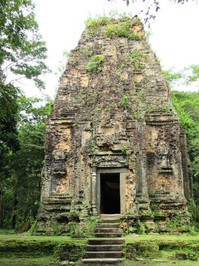
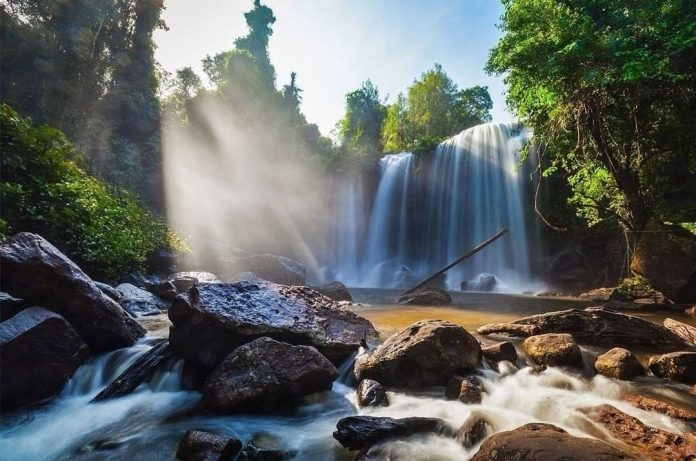
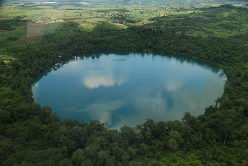
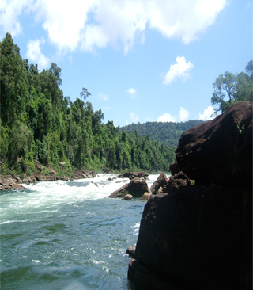
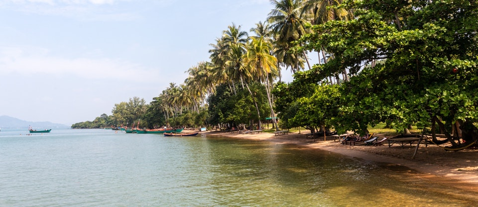
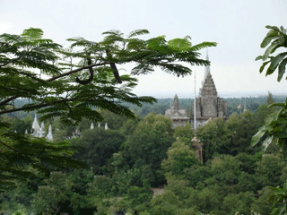
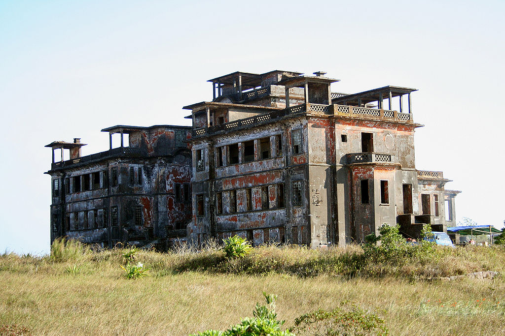
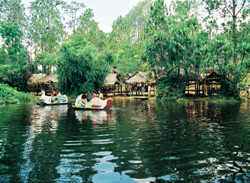

Content
Lesson 1: AngkorWat............................................................................................................................................................................................................
Lesson 2: Sambor Prei Kuk...................................................................................................................................................................................................
Lesson 3: PhnomKulen.........................................................................................................................................................................................................
Lesson 4: Yeak Laom Lake...................................................................................................................................................................................................
Lesson 5: Koh Moul..............................................................................................................................................................................................................
Lesson 6: Koh Tonsay............................................................................................................................................................................................................
Lesson 7: Teuk Cha...............................................................................................................................................................................................................
Lesson 8: Bokor Hill Station................................................................................................................................................................................................
Lesson 9: Kirirom..................................................................................................................................................................................................................
Lesson 1 Angkor Wat

Angkor Wat in Siem Reap, Cambodia is the largest religious monument in the world. Angkor Wat, translated from Khmer (the official language of Cambodia) literally means “City Temple.” As far as names go this is as generic as it gets. Angkor Wat was not the original name given to the temple when it was built in the 12th century. We have little knowledge of how this temple was referred to during the time of its use, as there are no extant texts or inscriptions that mention the temple by name—this is quite incredible if we consider the fact that Angkor Wat is the greatest religious construction project in Southeast Asia. A possible reason why the temple’s original name may have never been documented is that it was such an important and famous monument that there was no need to refer to it by its name. We have several references to the king who built the temple, King Suryavarman II (1113-1145/50 C.E.), and events that took place at the temple, but no mention of its name.Angkor Wat is dedicated to the Hindu god Vishnu who is one of the three principal gods in the Hindu pantheon (Shiva and Brahma are the others). Among them he is known as the “Protector.” The major patron of Angkor Wat was King Suryavarman II, whose name translates as the “protector of the sun.” Many scholars believe that Angkor Wat was not only a temple dedicated to Vishnu but that it was also intended to serve as the king’s mausoleum in deathThe construction of Angkor Wat likely began in the year 1116 C.E.—three years after King Suryavarman II came to the throne—with construction ending in 1150, shortly after the king’s death. Evidence for these dates comes in part from inscriptions, which are vague, but also from the architectural design and artistic style of the temple and its associated sculptures. The building of temples by Khmer kings was a means of legitimizing their claim to political office and also to lay claim to the protection and powers of the gods. Hindu temples are not a place for religious congregation; instead; they are homes of the god. In order for a king to lay claim to his political office he had prove that the gods did not support his predecessors or his enemies. To this end, the king had to build the grandest temple/palace for the gods, one that proved to be more lavish than any previous temples. In doing so, the king could make visible his ability to harness the energy and resources to construct the temple, and assert that his temple was the only place that a god would consider residing in on earth. The building of Angkor Wat is likely to have necessitated some 300,000 workers, which included architects, construction workers, masons, sculptors and the servants to feed these workers. Construction of the site took over 30 years and was never completely finished. The site is built entirely out of stone, which is incredible as close examination of the temple demonstrates that almost every surface is treated and carved with narrative or decorative details There are 1,200 square meters of carved bas reliefs at Angkor Wat, representing eight different Hindu stories. Perhaps the most important narrative represented at Angkor Wat is the Churning of the Ocean of Milk(below), which depicts a story about the beginning of time and the creation of the universe. It is also a story about the victory of good over evil. In the story, devas (gods) are fighting the asuras (demons) in order reclaim order and power for the gods who have lost it. In order to reclaim peace and order, the elixir of life (amrita) needs to be released from the earth; however, the only way for the elixir to be released is for the gods and demons to first work together. To this end, both sides are aware that once the amrita is released there will be a battle to attain ithe relief depicts the moment when the two sides are churning the ocean of milk. In the detail above you can see that the gods and demons are playing a sort of tug-of-war with the Naga or serpent king as their divine rope. The Naga is being spun on Mt. Mandara represented by Vishnu (in the center). Several things happen while the churning of milk takes place. One event is that the foam from the churning produces apsaras or celestial maidens who are carved in relief throughout Angkor Wat (we see them here on either side of Vishnu, above the gods and demons). Once the elixir is released, Indra (the Vedic god who is considered the king of all the gods) is seen descending from heaven to catch it and save the world from the destruction of the demons.The five stone towers are intended to mimic the five mountain ranges of Mt. Meru—the mythical home of the gods, for both Hindus and Buddhists. The temple mountain as an architectural design was invented in Southeast Asia. Southeast Asian architects quite literally envisioned temples dedicated to Hindu gods on earth as a representation of Mt. Meru. The galleries and the empty spaces that they created between one another and the moat are envisioned as the mountain ranges and oceans that surround Mt. Meru. Mt. Meru is not only home to the gods, it is also considered an axis-mundi. An axis-mundi is a cosmic or world axis that connects heaven and earth. In designing Angkor Wat in this way, King Suryavarman II and his architects intended for the temple to serve as the supreme abode for Vishnu. Similarly, the symbolism of Angkor Wat serving as an axis mundi was intended to demonstrate the Angkor Kingdom’s and the king’s central place in the universe. In addition to envisioning Angkor Wat as Mt. Meru on earth, the temple’s architects, of whom we know nothing, also ingeniously designed the temple so that embedded in the temple’s construction is a map of the cosmos (mandala) as well as a historical record of the temple’s patron.According to ancient Sanskrit and Khmer texts, religious monuments and specifically temples must be organized in such a way that they are in harmony with the universe, meaning that the temple should be planned according to the rising sun and moon, in addition to symbolizing the recurrent time sequences of the days, months and years. The central axis of these temples should also be aligned with the planets, thus connecting the structure to the cosmos so that temples become spiritual, political, cosmological, astronomical and geo-physical centers. They are, in other words, intended to represent microcosms of the universe and are organized as mandalas—diagrams of the universe.
Lesson 2 Sambor Prei Kuk

Sambor Prei Kuk is an archaeological site in Cambodia located in Kampong Thom Province, 30 km (19 mi) north of Kampong Thom, the provincial capital, 176 km (109 mi) east of Angkor and 206 km (128 mi) north of Phnom Penh. The now ruined complex dates back to the Pre-Angkorian Chenla Kingdom (late 6th to 9th century), established by king Isanavarman I as central royal sanctuary and capital, known then as Isanapura.In 2017, Sambor Prei Kuk was declared a UNESCO World Heritage Site. Located on the Eastern bank of the Tonle Sap lake, close to the Steung Saen River, the central part of Sambor Prei Kuk is divided into three main groups. Each group has a square layout surrounded by a brick wall. The structures of the overall archaeological area were constructed at variable times: the southern and north groups (7th century) by Isanavarman I, who is considered a possible founder of the city[4] and the central group (later date). The buildings of Sambor Prei Kuk are characteristic of the Pre-Angkorean period with a simple external plan. The principal material is brick, but sandstone is also used for certain structures.[5] Architectural features include numerous prasats, octagonal towers, shiva lingams and yonis, ponds and reservoirs, and lion sculptures. Sambor Prei Kuk is located amidst mature sub-tropical forests with limited undergrowth. The area has been mined and could still contain unexploded ordnance.The ancient city where monuments of Sambo Prei Kuk are found today was identified as ISANAPURA, the capital of Chenla in 7th century. Chenla was a former vassal of the Funan kingdom that was one of the first state in Southeast Asia, but it gradually gained its power and eventually King Citrasena Mahendravarman of Funan in the early 7th century.Main archaeological features in these groups of monuments are said to have been founded by king ISANAVARMAN I, the son of king Citrasena.Many decorative details in Khmer architecture and sculpture are classified as Sambor style:the name was derived from these monuments dated in the first half of the 7th century. Henceforth this kingdom was the leading state and comprised the whole of Cambodia proper. Furthermore, several successions of kings’ reign might have maintained these monuments as their capital city. The century following the death of JAYAVARMAN I who is the last known king of this kingdom in the second half of the 7th century is a dark period in the history of Chenla. According to a Chinese accounts, in the 8th century, the country of Chenla was divided into land and water Chenlas. The obscurity prevails and this monument might be neglected thereafter. The history. However, is traced again with the accession of JAYAVARMAN II, who founded a new polity that is now referred as Angkor in the beginning of 9th century. Decorative details of Prasat Tao (Central Group) are similar to the style of the remains belong to the period of the king JAYAVARMAN II, Particularly, characteristic lion statues resembles the statues found in Phnom Penh. From these reasons this architectural complex is said to be constructed in this period.Furthermore some inscriptions in Prasat Sambor (Northern Group) are dated in the 10th century under the reign of the king RAJENDRA VARMANII. And Robang Romeas group that is located about 2km northward from main temple area, contains other inscriptions of the king SURYAVARMAN I period. Some other decorative details and statues belong to the late Angkor period styles were confirmed from these temples. These historical evidences suggest that these monuments must have belonged to the important provincial principle city after Pre Angkor period.From above historical perspective, this group of monuments is extremely significant not only for Cambodia but also for the entire area of Southeast Asia, for they are the only remaining sound architectural constructions that exemplify the architecture and sculpture of the early period in sizable quantity
Lesson 3 Phnom Kulen

A playground for locals, Phnom Kulen (literally Mountain of the Lychees) is a gorgeous day out. The main attraction is the waterfalls at the top of Kulen Mountain and it’s also a great picnic spot; well set up in Cambodian style with hammocks and shelters to keep you shaded from the sun. It’s around 1.5-2 hours drive from Siem Reap and if you go all the way to the top by van or car, you need to get there early, as the road is one-way traffic only.The birthplace of the ancient Khmer empire, it is said that it was at Phnom Kulen that King Jayavarman II proclaimed Cambodia’s independence from Java.Additionally it’s a very sacred site with multiple temples easily accessible. Two sites most noted are the Thousand Lingas at Kbal Spean, within the Kulen National Park site and Preah Ang Thom pagoda with its giant reclining Buddha. The area is a magnet to “kru khmer” (natural medicine doctors), and attracts people seeking blessings from its holy waters, particularly the potent life-giving waters at Kbal Spean, that are said to help couples conceive.In ancient Khmer, Phnom Kulen was called Mahendraparvata, “Mountain of Indra, the King of the Gods”. It was a thriving city around the size of modern Phnom Penh and the birthplace of the Khmer empire, where King Jayavarman II proclaimed Cambodia’s independence from Java in AD 802. Following this, the capital moved to Roluos (formerly called Hariharalaya).Though known of by locals, the Kulen’s ancient city was formally rediscovered by explorers in 2012. Starting with a ground expedition and later employing LIDAR technology, Jean-Baptiste Chevance and Damian Evans uncovered Mahendraparvata and several historically important temples, like Prasat O’Paong, which is shaped like a pyramid, with three levels and five towers, similar to those of Angkor Wat.Phnom Kulen is 48km from Siem Reap and can take 1.5-2 hours to reach by car or van, longer by tuk tuk but then that will only be if you want to walk up and back down again (approx. 2 hours each way, and absolutely stunning) as tuk tuk’s aren’t capable of making the steep journey to the top. How to go there:The ticket office is at the bottom of Phnom Kulen and is the entrance to the Phnom Kulen National Park. It is here that you need to pay for your ticket, if you didn’t buy it in town, and show your tickets to go through. There are good toilet facilities here.From the ticket office, it’s another 20 or so minutes of windy roads until you reach the top, where there are lots of markets selling souvenirs, clothing, snacks and drinks. From here you walk the rest of the way, following the grand staircase up to the pagoda or the lower path that leads to the waterfall and the picnic areas.If you like hiking and are feeling energetic then the walk from the bottom of the mountain to the top of Phnom Kulen is highly recommended. A more detailed description can be found on the forum.A taxi/car for the day is around $50 and vans from $60-80.It’s worth planning your day, as it’s also possible to visit Banteay Srei region on the way back. However if you do wish to see the temples (Banteay Srei and Banteay Samre), you will also need an Angkor pass.Alternatively, another nice way to complete the day is with a visit to Beng Mealea, only 7 kilometres away from Phnom Kulen. Surrounded by a 1.2 km wide moat, Beng Mealea is a beautiful temple to visit, still engulfed in jungle overgrowth and untouched.
Lesson 4Yeak Laom Lake

Yeak Laom Lake is situated 5 km. south - east of Banlung. The Yeak Laom lake (volcanic crater) is the most beautiful lake of Ratanakiri formed by a volcanic eruption almost 4,000 years ago with 50 m. deep, 800 m. diameter and a walking path around the lake of 2,500 m. Two hundred meters of the track is a quaint wooden building housing tribal handicraft, the Crafts Museum.The Yeak Laom Lake in Ratanakiri consists of five Tampuen villages totaling to about 1500 people. The villages known as the Lon, Lapoe and Sil are located adjacent to the road to Yeak Laom Lake. The Chree village is positioned to the west of the lake, next to Banlung. Phnom village is to the northeast of the lake. The traditional lands of Yeak Laom once included the land which now occupied by Ban Lung. Formerly profuse in natural resources, the Yeak Laom Lake, Ratanakiri now retains smaller areas of forest, much of which are crucial to sustaining the ecological community and the spiritual connection of the people with the land. Apart from the Yeak Laom Lake protected area, there is the Spirit Forest of Youl Mountain and the forests of community use of the Koul Mountain and Vilakart. Walks to the Yeak Laom Lake, Ratanakiri take around 3 hours but much of the experience consists of getting to the location.The guides always welcome your suggestions for further activities. They can also arrange for other tourist activities in Ratanakiri, including elephant riding and boating.The Yeak Laom Commune is featured by basalt rock formations, deep red soils, and a variety of forests.Tourists have the option to take a dip in the lucid waters or perhaps stroll in the jungle that resides several nearby waterfalls. Another popular activity in this area is rafting. The aboriginals of Khmer Leu hill have always acknowledged the natural areas and the lake as a sacred place, abode to the spirits of the water, forest and land. According to the local myth of Yeak Laom Lake, this area is resided by tremendous, spiritual aquatic beings. One will be exhilarated by the area’s legends. The region’s hill tribe villages will entice you with their unique culture and norms. Beung Yeak Laom is located in Yeak Loam commune, Ban Loung district, about 5 kilometers south of Ban Loung provincial town. A lake in the middle of a mountain, it was formed many centuries ago from a volcano. The lake is about 800 meters in diameter and 48 meters deep during the dry season. The water is clear and suitable for swimming.There are two places along the bank where visitors can relax and enjoy a panoramic view of the lake and the flora and fauna. A tourist information center is on the west bank, and handicrafts made by hill tribes living nearby are available for sale.Beung Yeak Laom is a place of worship for the hill tribes. They believe there is a powerful spirit who owns the surrounding land and forest. Beung Yeak Laom is popular with tourists who like to swim or hike in the forest surrounding the lake. Because there are no vendors, visitors should bring along their own food and beverages.Is the natural lake, which locates at the middle of mountain in Yeak Loam Commune, Ban Lung district from the Ban Lung town. The lake has square shape, approximate 800m diameter and 48m depth during the dry season, and occurs by volcano for centuries. The lake has clear water as the sea suitable for swimming, and there are tow harbors protruded to the above of the water for tourists to view the scenary and birds that are swimming along the stretch of the forest surrounding the lake. information to tourists, and also for displaying souvenirs and handicrafts made by ethnic minorities. At the western bank of the lake, there is a tourist information center where for guiding and giving information center where for guiding and giving information to tourists, and also for displaying souvenirs and handicrafts made by ethnic minorities.Beung Yeak Laom is located in Yeak Laom commune, Ban Loung district, about 5 kilometers south of Ban Loung provincial town. A lake in the middle of a mountain, it was formed many centuries ago from volcano. The lake is about 800 meters in diameter and 48 meters deep during about dry season. The water is clear and suitable for swimming.Boeung Yak Loam is a natural, almost square-shaped lake situated in the middle of a mountain in Ban Lung District, 5km from Rattanakiri provincial town. The lake is approximately 800m in diameter with a depth of 48m during the dry season, and was created by volcanic movements centuries ago. Boeung Yak Loam has picturesque mountainous scenery, a charming bird sanctuary and provides the visitor with an opportunity to experience the daily life of local hill-tribe people. "I visited this lake while in the sparsely populated north eastern corner of Cambodia. It is called the crater lake because it resides in an ancient crater that was caused by either an extinct volcano or an asteroid impact. The locals I talked to couldn't seem to decide on which one it was and everyone had a different explanation. One of the really interesting things about the lake is that it is shaped in a perfect circle and the water is so clear and fresh that I could see straight to the bottom. I wasn't the only one visiting the lake that day. It was the middle of April, or 'hot season', when the daily temperature was reaching over 40°C and most of the locals were bathing in the cool waters to avoid the searing heat. I was having a fun diving contest with this group of Cambodian kids and grabbed a shot while a few were preparing for their next jump."
Lesson 5 Koh Moul

Koh Moul, the biggest island in Cambodia, is 22 kilometers long and 7 kilometers wide. The island is located in Koh Kong district, about 24 kilometers south of Koh Kong provincial town. Koh Moul is 350 meters above sea level. The island has many hills and is rich in natural scenery.Koh Kong Krav has more than 10 waterfalls that range from 6 to 25 meters in height. Koh Moul features 6 beautiful beaches, known as Deum Dong Beach 1 to 6, that range from 3,000 to 5,000 meters long. All have beautiful white sand and limpid water. The water surrounding the island are full of black and white dolphines that appear along the beach from 9 to 10:30 in the morning and 5 to 7:30 in the evening.Koh Mool Resort (Kor Kong Krau), Koh Kong is visited by thousands of travelers from all over the world as is counted among the topmost tourist attractions in Koh Kong. Situated at one of the idyllic locations of Koh Kong the Koh Mool Resort (Kor Kong Krau), Koh Kong is next to paradise. Known as the ?largest island in Cambodia?, Koh Mool is only a little away from the charming town of Koh Kong. Although much of Koh Kong still remains unexplored the tourism industry is flourishing and you will see some of the finest places of interest in Koh Kong. Koh Mool Resort (Kor Kong Krau) is only 24 km away from the centre of the town and you can hire a car to visit this lovely place. It is the natural splendor of Koh Moul Resort (Kor Kong Krau) in Koh Kong that attracts thousands of travelers.Apart from the lovely retreats one can find waterfalls and you will stand mesmerized before the cascading waters of the fall from the height of 25 m. Apart from the tall waterfalls one can also see a number of small springs, and nooks in Koh Moul Resort (Kor Kong Krau), Koh Kong. Apart from the gushing springs you will see some the dolphins which will playfully come near you. As you stand on the beaches you will be simply surprised to see the black and white dolphins which are fearless of human touch. Your kids will enjoy the dolphin show that is organized at the Koh Moul Resort (Kor Kong Krau), Koh Kong for the recreation of the guests. if you are planning to stay for sometime then you can put up at any of the lovely retreats near the beach. A walk on the beach in the moonlit night is an experience you will never forget.
Lesson 6Koh Tonsay

Koh Thonsáy is a Cambodian island located off the country's southern coast in the Gulf of Thailand. "Koh Thonsáy" translates to Rabbit Island, it is being administered by Kep Province. Koh Tonsay is located just 4 km (2 mi) south of Kep town, has an area of around 2 km2 (1 sq mi) and can be reached by ferry boat from the local port.[1] The island is open for visitors and tourists, who value white sand beaches and the marine scenery. The surrounding sea is shallow, the sea bed gradually sloping, excellent for recreational activities. A number of coral reefs and a variety of habitats for animals and plants attract researchers and ecologists. During Norodom Sihanouk’s Sangkum Reastr Niyum regime (1953 to 1970), the island was a rehabilitation center for convicted criminals, who were in turn used to defend the island. Horse cart paths and wooden, thatched roof hotels were also constructed during this time. Most of this infrastructure has been destroyed by weather and decades of war. Currently there are individually built and run guest houses on the main beach, attracting Cambodian and foreign tourists. Local settlers - fishermen and their families also live on the island, occupying other beaches around the shoreline.[2] onsáy is derived from the word Rumsay engl. "discharged").[3] While trying to avoid the commander’s troops, Khmer prince Sakor Reach grew hopeless because his troops were exhausted. He led his remaining troops across the sea to an island in front of Kep city, where the troops spread out. Accordingly, the island was called Koh Rumsay the name underwent a transformation towards Koh Thonsay, as it is known today. If you like the rustic beachcomber lifestyle, Koh Tonsay's 250m-long main beach is for you, but come now as the island is tagged for development. The beach is one of the nicest of any of the Kep-area islands, but don’t expect sparkling white sand. This one has shorefront flotsam, chickens and wandering cows. Restaurant shacks and rudimentary bungalows (from US$7 per night) rim the sand. Boats to Rabbit Island (30 minutes) leave from Rabbit Island pier at 9am and 1pm. Leaflet | Map data © OpenStreetMapcontributors, CC-BY-SA, Imagery © Mapbox Return trips from Kep are at 3pm in the rainy season, 4pm in the dry season. Return tickets cost US$8. Kep guesthouses can arrange boat tickets or you can head to the Koh Tonsay Boat Ticket Office at the pier. Private boats to the island can be arranged at the pier and cost US$25 return for up to six people. Rabbit Island is so named because locals say it resembles a rabbit – an example of what too much local brew can do to your imagination. Other Kep-area islands include Koh Pos (Snake Island; about 30 minutes beyond Rabbit Island), which has a deserted beach and fine snorkelling but no overnight accommodation. Getting out there costs about US$50 for an all-day trip by 10-person boat. There's also small, beachless Koh Svay (Mango Island), whose summit offers nice views.
Lesson 7 Teuk Cha

Next to Preah Theat Teuk Chhar temples is a canal dug during ancient times. Water fills the canal year round, and the water is very clear and free-flowing, making it popular with tourists who enjoy bathing in it. At one time, there were many trees and plants along both sides of the canal, but they were removed to make a big plain, where the water flows alongside the main temple. Today, the ancient pond designed by Leaksintra is a vast source of water that is contained by a dam built several years ago. The water that fills the canal flows south from Kampong Cham province, pass the temple and into the big slit, which for many years has been full of water that irrigates the rice fields of nearby villages such as Kroch village in Prey Chhar district. Because the canal is old, the Ministry of Agriculture has built a dam to store water to supply thousands of hectares of rice fields in Prey Chhar district, Kampong Cham province and Baray district in Kampong Thom province. The surface of Teuk Chha is 3 square kilometers. The water that fills it comes from about ten sources in the mountainous northeast and the plateau region, which is called Kbal Teuk. This basin has an average depth of 2 meters. The water flows through three channels. Any two of the channels can be closed at one time, allowing the water to flow into the third channel and into the dam. The first channel is opened every day, and the rapidly flowing water sounds much like a waterfall, attracting many tourists. The second channel is opened only occasionally during festival days; therefore the water flow is not very strong. Water from the north channel flows only during the rainy season, because during the dry season, the water level is lower than the dam. Because the canal of Teuk Chhar is angled like a carpenter's tool, people can swim there. Since the water is clear, visitors can watch schools of small fish swimming in opposite direction of the water flow. In addition, the trees that line the canal bank hold many birds and provide shade and shelter to visitors. The cool climate along with the water and big trees that surround the ancient temple make this site popular with tourists and locals, who enjoy spending their holidays there. Thus, this place is very well known In order to take advantage from the canal, a dam has been constructed to provide water to big rice fields in Prey Chhor District, Kampong Cham Pronvice and in Ba Ray District, Kampon Thom province. Because the area is the cool place with great quantity of water and cool shadow from the trees that are growing around the ancient temple, these can sometime attract tourists to visit and enjoy during their holiday leading to be well known. Nowadays, the ancient pond, which we described as the achievement of Dr. Chung Kheal is the wast-water pond located in front of the dam that has been just constructed recently. The canal has water flowing from above and has source at the North in Kampong Cham province; the water flows from the North to the East, when touching a side of the temple, it flows down into a big slit. From the ancient time, the slit has been full of water; but there are small currents of water shared from the slit, then flow into rice fields of the surrounding villages such as Kroch village in Sre Chhor District as well. Because the canal is old, the Ministry of Agriculture has organized a dam for stocking water in order to accelerate the water flow of the canal to thousand Hectars of rice fields in districts of Prey Chhor and Ba Ray. The canal of Teuk Chha has corner where they can enjoy swimming; if someone like swimming in the shallow water, he/she can swim in the old canal, North of the dam because the bottom of the old canal has four-meter or five-meter width. The clear water, we can see its bottom with flock of small fish swimming in reverse direction to the water flow. If some one like swimming in deep water, he can swim in a wast water, South of the dam. Around the Slit of the canal bank, there is a high tree which provide shelter to tourists and birds. The water surface of Teuk Chha has appoximate 3-square kilometre size filled by nearly 10 sources at the Northeast Mountain and plateau called Kbal Teuk. The tank of stocked water has appoximately more than two-metre depth and pours to three accesses: two accesses via the dam can be closed and opened, and another one is the 10-meter Slit, North of the dam. The first dam is opened every day; the water flows down sounding as water fall; this can attract tourists to enjoy swimming. The second dam is opened during the festival days sometime; the water flow is not strong.
Lesson 8Borkor Hill Station

Bokor Hill Station ( Kosthany Phnom Bokor, French: Bokor Elevation Station) refers to a collection of French colonial buildings constructed as a temperate mountain luxury resort and retreat for colonial residents in the early 1920s atop Bokor Mountain in Preah Monivong National Park, about 37 km (23 mi) west of Kampot in southern Cambodia. Abandoned for long periods of time, modern infrastructure has made the location easily accessible as re-development is taking place. It was used as the location for the final showdown of the movie City of Ghosts (2002) and the 2004 film R-Point.[1] To the north-east are the Povokvil Waterfalls. Only 8 kilometres from the quiet Cambodian town of Kampot lies the entrance to Bokor Mountain in Bokor National Park. Reputedly home to wild elephants and tigers it boasts a beautiful landscape most famous for the abandoned Bokor Hill Station, a new luxury casino and hotel complex, waterfalls and some great hiking opportunities. Riding Bokor Mountain Riding up Bokor Mountain Getting to Bokor Mountain takes you along a scenic drive from town on a newly constructed road that is in great condition. In the past the route was quite treacherous but since 2012 and the construction of the new casino this has all changed. There is no passenger entrance fee to the park, but a scooter will cost 2000 Riel (50c US).The best way to get to Bokor National Park! It is 32 kilometres from the entrance to the end of the road on Bokor Mountain through some steep, curvy terrain. Traffic is minimal. While the distance is not great you can easily expect this to take up to two hours one way to get to the abandoned casino depending on the power of your ride and how often you stop to take photos. You can rent bikes in Kampot for between $5-20 depending on the size of bike you would like. Due to the steep inclines a full tank of fuel is a good idea. There is a fuel station at the corner of the turn-off. To fill up a scooter should cost about $4-5Bokor Mountain is notorious for cloudy conditions and sporadic rain. Rolling clouds can bring visibility down to almost zero in a matter of seconds. It is also a lot cooler up at 1080m than what you may be used to. Due to this we recommend bringing at least a poncho or rain jacket and warm clothes. It can get cold up on the mountain! At Bokor Hill Station is Le Bokor Palace Hotel and Casino which was built in 1925. Abandoned by the French since the 1940s, it is now a shell of its former self but makes for an interesting time exploring the old building. Located on the edge of a cliff when visibility is good you are offered spectacular views of the Gulf of Thailand, the Southern Cambodian islands and Phu Quoc island. An old Catholic church remains unoccupied closer to the new casino and also makes for an eery sight. Thansur Bokor Highland Resort is a new 5 star development housing a hotel, casino, restaurants and cafes. It is worth stopping by just to check out the immense scope of plans they have for the entire area. If things go through, this will be one of the largest resort complexes in SE Asia. Popokvil waterfall is another great stopping off point to snap some pictures. Popokvil, meaning ‘swirling clouds’ is an appropriate name for the cascades. These are best visited in the wet season when the falls are at their most impressive. There are plenty of hikes around Bokor Mountain to go on as well and guides can be hired from either Kampot or the Thansur Bokor Highland Resort. Do be careful to not venture off the paths due to the possibility of land mines still being hidden. The area has been cleared twice, but it is always better to be safe than sorry! Lok Yeay Mao Monument is a large meditating Buddha that overlooks the coast. It will be one of the first attractions you get to as you ride up into Bokor National Park and is worth parking up and walking to the top for the view. Behind the new resort is Wat Sampove Pram. A small pagoda and temple with many Buddha statues around it is definitely worth stopping by to check out and enjoy the amazing scenery
Lesson 9 Kirirom

Located at Phnom Sruoch district in the province of Kampong Speu, Kirirom National Park is established on a seven hundred meters hill covering an area of over thirty five thousand hectares in the Elephant Mountains. The name 'Kirirom' meaning Mountain of Joy was given to it by the King of Cambodia. Kirirom National Park, a high altitude plateau, is known for its unique high elevation pine forest, which forms the headwaters for numerous streams feeding Kampong Speu Town.This park is part of the 'Southwest Cluster Protected Areas' which include Phnom Bokor, Preah Sihanouk and Kep National Parks. Attractions at this hill station of Kirirom are its spectacular scenery and its astonishing waterfalls.This park is also the home to many endangered species of animals such as Pleated gibbon, sun bear and tiger . You can take a ride in the traditional ox-cart ride or trek along the walking trails among the pine trees. Since this natural resort is located one hundred and twenty kilometers to the west of Phnom Penh, visitors can hire taxis to get here. Traveling along National Road No. 4 will also get you here. The Kirirom National Park, whose official name is Preah Suramarith Kossmak, is about 80,000 acres of forested land on a rare plateau in southwestern Cambodia. The elevation is about 2,200 feet, high enough to support a large pine forest quite distinct from most of the country's tropical jungle. Our last stop in the park was a newly renovated visitor’s center which was small but quite impressive.he visitor’s center has some really attractive displays although there are too many for such a small space. Still it was refreshing to see such high standards applied to the center.Especially rewarding was meeting the woman in the picture, the manager of the center, who obviously was proud of her country, her park, and her job representing it to the public. Next to the visitor’s center are the ruins of a large old mansion. Pictured here is a tall, multi-part chimney on a foundation surrounded by a wooden deck that is falling dangerously apart. The house was a hot-season estate of Cambodia's King Sihanouk but it was destroyed by the Khmer Rouge who was not finally driven out of this area until 1992.he most southerly point of the Cardamom Mountain range, Kirirom National Park rises from the flat rice fields and mango plantations, and the natural beauty found its pine trees, mountain lakes, wildflowers, and seemingly endless vistas make the journey to Cambodia’s first National Park worth the effort.Halfway between Phnom Penh and Sihanoukville along National Road 4, Kirirom National Park is 700 meters above sea level. The cooler temperatures and inviting odor of pine means that Kirirom offers the closest glimpse of the forests of Europe in Cambodia, while the piles of plastic garbage along the winding road help to remind you just where you actually areBut this certainly shouldn’t stop a visit, with the waterfalls and forest walks on offer a suitable payoff. Just like the coastal town of Kep, Kirirom was a playground for the Cambodian elite prior to the Khmer Rouge era, and the shells of their villas (including that of the late King-father Sihanouk) dot the landscape. And now with the construction of the sprawling V.Kirirom resort, the country’s new elites have returned with villas again nestled among the trees—but with paddle boarding and zorbing now on offer. Getting to Kirirom by public transport isn’t easy for those without access to private transport, but it isn’t impossible. Buses to and from Sihanoukville and Koh Kong pass through the town of Treng Trayeng, and hopping off will ensure that local taxi drivers will quickly find you and offer access to the nearby park. A more expensive, but less stressful option is to hire a taxi in Phnom Penh to make the journey. The highway is narrow and lacks a hard shoulder, so attempting to ride a motorbike to the park should only be done by confident riders in daylight hours. From the park gates, where guards insist on a $5-per-foreigner entry fee, the narrow road winds up and up, passing small communities selling forest plants and garlands of wildflowers that are a hit with Cambodian ladies.Most visitors head to the “waterfall,” a modest set of rapids encased in bamboo huts offering a very Cambodian setting to enjoy lunch and respite from the sun. For the more adventurous, numerous tracks and trails offer walkers and moto-drivers kilometers of forest to explore, with less garbage on display the further away. Small hill-top shrines allow the forest spirits to be appeased, and offer fantastic viewpoints across the park.